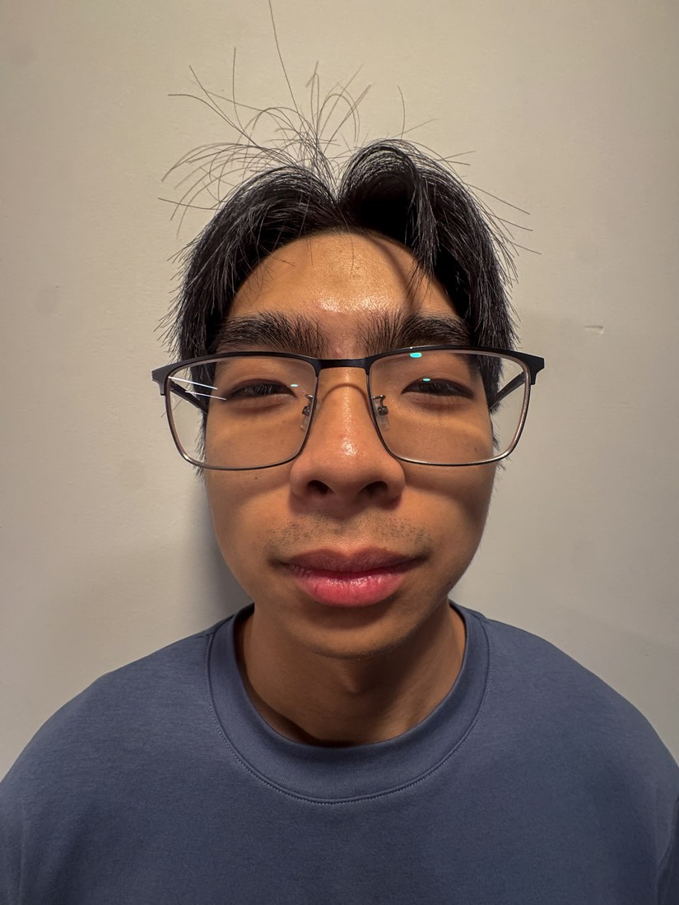
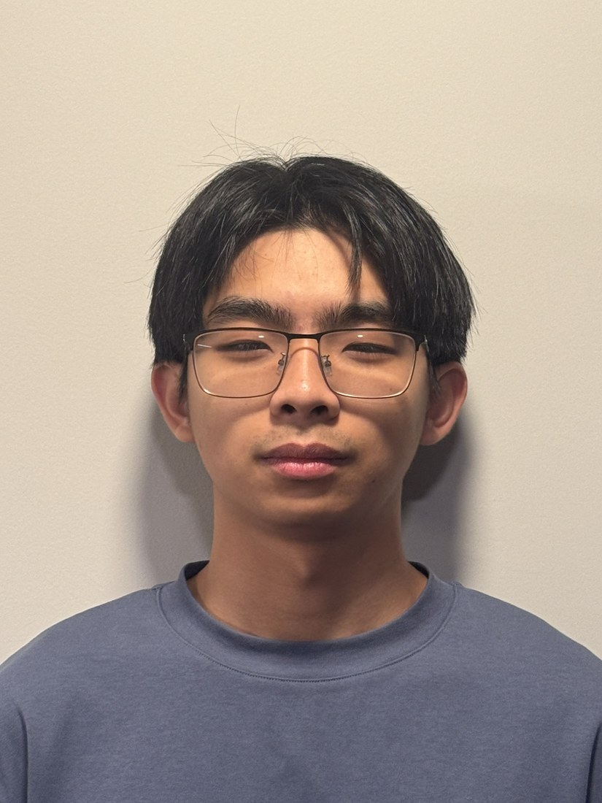
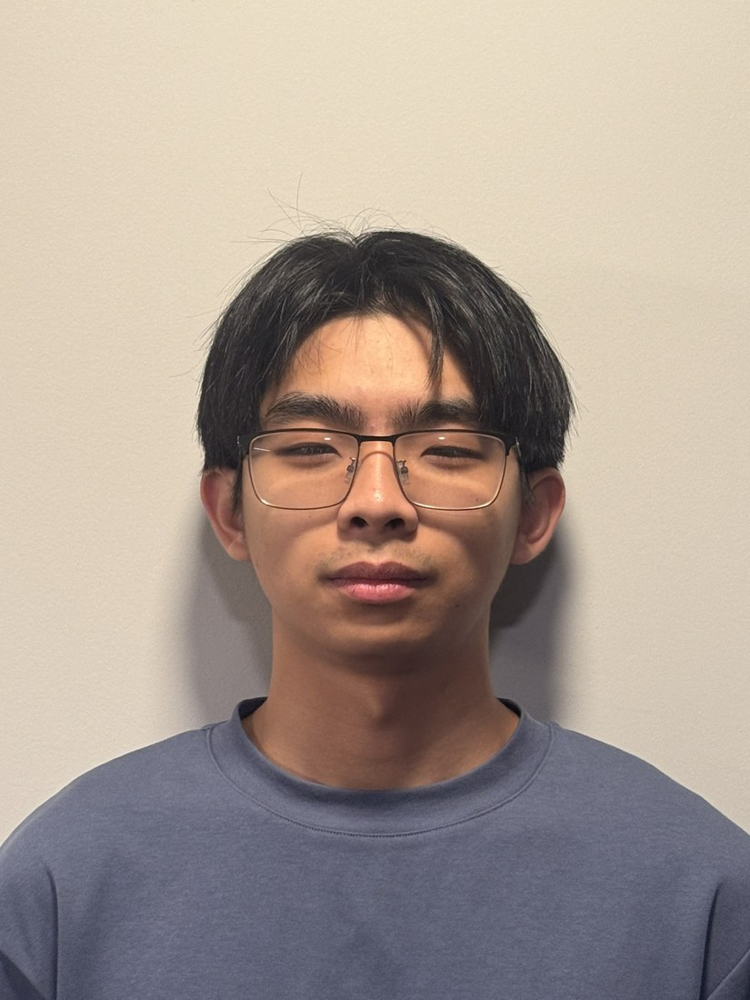
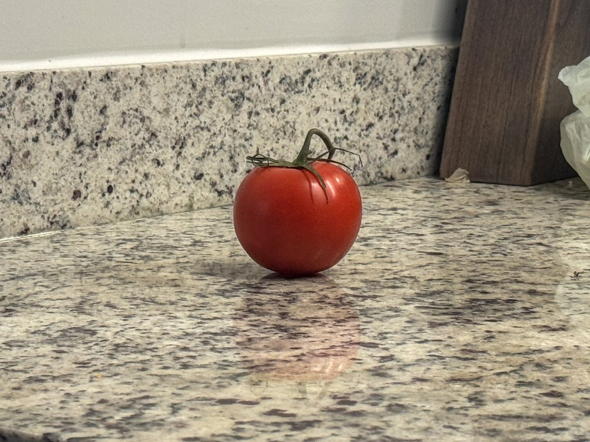
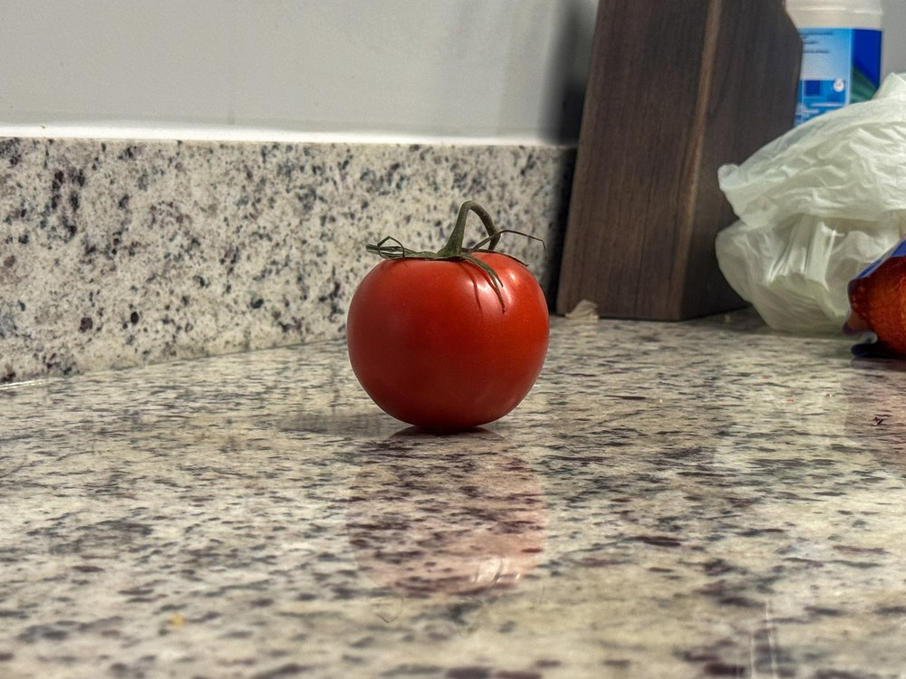
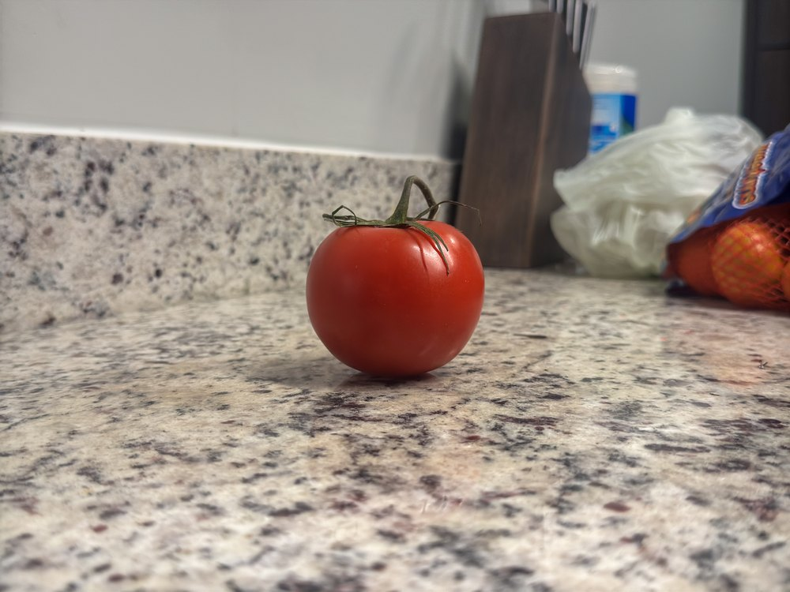
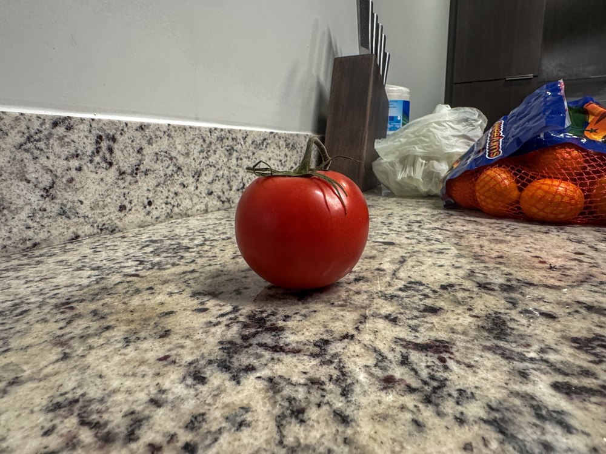
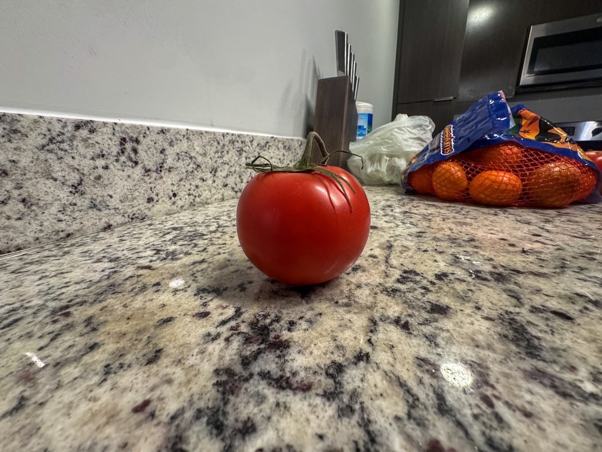

CS 180 · Project 0
I took two photos of my friend: one wide shot from close up, and one zoomed shot from far away.


Close up.

Far away.
"Veen".
Your analysis.
Setup and what you did.
Far away, zoomed in.
Close up, no zoom.
Caption.
Your analysis.
Placed a tomato on my countertop and photographed it at progressively increasing distances while zooming out to keep it at a (relatively) constant size.





A tomato.
Your analysis.
All photos were shot on an iPhone 15 Pro Max.